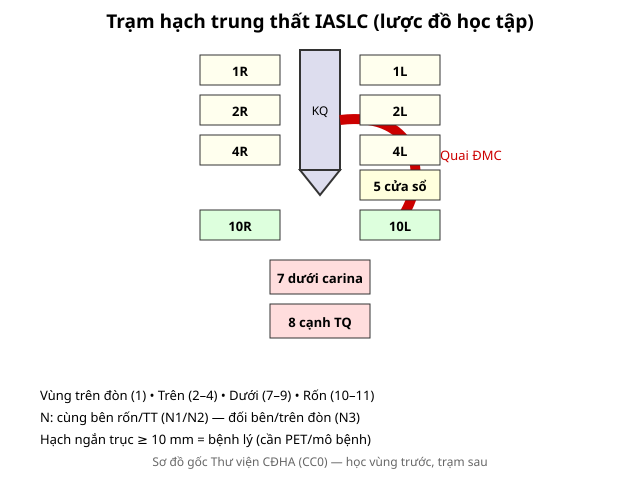
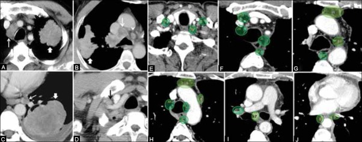
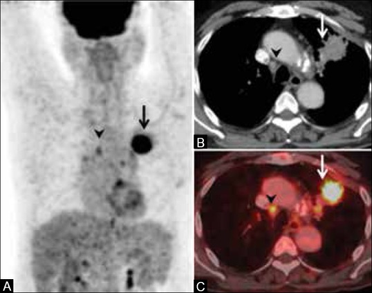
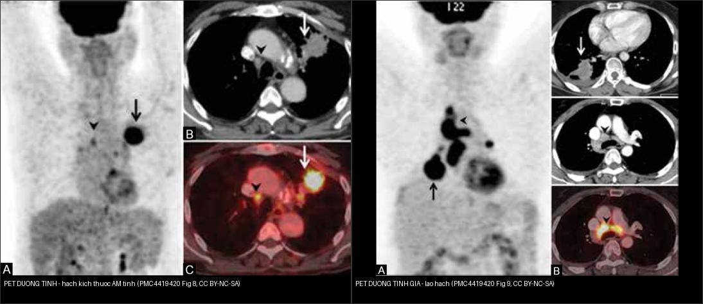

012 — Hạch trung thất IASLC & đường-dải / Lymph node stations & Mediastinal lines
Tags: pattern:hach vung:trung-that score:IASLC protocol:PET-CT-nguc
Mức chắc chắn (certainty): tổng hợp y văn (literature synthesis) — nhóm tự biên từ y văn mở, minh họa bằng ca trong bài tổng quan Imaging of lung cancer (Indian J Radiol Imaging 2015, CC BY-NC-SA 3.0).
1. Tổng quan — học vùng trước, trạm sau + ngưỡng 10 mm
- IASLC (International Association for the Study of Lung Cancer) chia hạch thành vùng trên đòn (1), trên (2–4), dưới (7–9: dưới carina, cạnh thực quản), rốn (10–11). TẠI SAO vùng quyết định N: cùng bên rốn/trung thất = N1/N2 (còn mổ được chọn lọc); đối bên hoặc trên đòn = N3 (không mổ triệt căn). Hạch N1–N3 đều là hạch vùng (khác di căn xa M1).
- Ngưỡng định lượng: trục ngắn ≥ 10 mm = hạch bệnh lý (không đặc hiệu — viêm/lao/sarcoid đều to; PET/mô bệnh quyết định). Hạch < 10 mm vẫn có thể là di căn (PET phát hiện hạch "âm tính về kích thước" — Hình 8).
- Đường-dải trung thất X-quang: mất/bè đường cạnh khí quản, cửa sổ aortopulmonary, đường cạnh thực quản = hạch/u đấy (bài 010). Trên CT, định khu bằng mốc giải phẫu (khí quản, quai ĐMC, carina, thực quản, dây chằng phổi) chứ không đoán cảm tính.

Sơ đồ gốc Thư viện CĐHA, CC0.
Trạm hạch theo bản đồ IASLC (E–J) + ca thực (A–D). Nguồn: Purandare NC et al., Indian J Radiol Imaging 2015, PMC4419420 Fig. 7, CC BY-NC-SA 3.0. Ảnh giữ nguyên bản.- Định khu nhanh trên CT (theo Fig. 7E–J): 1 đáy cổ–trên đòn; 2 cạnh khí quản trên; 3a trước mạch (prevascular) / 3p sau khí quản; 4 cạnh khí quản dưới (4R/4L); 5 cửa sổ aortopulmonary; 6 cạnh ĐMC lên; 7 dưới carina; 8 cạnh thực quản; 9 dây chằng phổi; 10 rốn phổi.
2. Gamut hạch to theo bối cảnh
- K phổi + hút thuốc: hạch cùng bên rốn/trung thất — N theo vùng (bài 022). Hạch N2 đa ổ vẫn có thể xếp bệnh lan rộng tại chỗ (hóa-xạ đồng thời) tùy hội chẩn.
- Trẻ + B symptoms + hạch nhiều nhóm: lymphoma (bao mạch không tắc — bài 060).
- Lao/sarcoid: hạch vôi hóa (vỏ trứng lao/silic) + tree-in-bud (lao) hoặc galaxy + hạch đối xứng (sarcoid). PET dương tính giả nổi tiếng (Hình 9).
- Phản ứng sau viêm: hạch < 15 mm, tan theo viêm — đừng PET vội khi đang viêm cấp.
3. Bảng so sánh phân biệt (ma trận đối chiếu)
| Thực thể (entity) | Hình ảnh điển hình | Chốt vào (rule-in) | Chốt loại (rule-out) | Gợi ý xác nhận |
|---|---|---|---|---|
| Hạch K phổi (N1–N2) | Hạch cùng bên rốn/trung thất, trục ngắn ≥ 10 mm, bắt thuốc, ± vôi | K phổi + hạch cùng bên + SUVmax cao | Hạch vôi vỏ trứng hai bên đối xứng → lao/sarcoid | EBUS-TBNA 4R/7/10; PET-CT toàn thân |
| Hạch K N3 | Hạch đối bên trung thất/rốn hoặc trên đòn (1), hoặc 2–4 đối bên | Đối bên/trên đòn + K phổi cùng bệnh cảnh | Hạch cùng bên đơn độc → N2 | Mô bệnh hạch đối bên/trên đòn (EBUS/vét hạch) |
| Lymphoma | Nhiều nhóm hạch, bao/tách mạch không tắc, đồng nhất | Hạch nhiều ngăn + trẻ/B symptoms | Tắc mạch/huyết khối → nghĩ K | Sinh thiết hạch to nhất, LDH |
| Lao / sarcoid | Hạch vôi hóa vỏ trứng, sarcoid đối xứng quanh rốn | Vôi vỏ trứng + bối cảnh lao/sarcoid | Bắt PET mạnh không loại được ác | AFB/GenXpert, nội soi phế quản, PET dương tính giả |
| Hạch viêm phản ứng | Hạch < 15 mm, không hoại tử, tan theo thời gian | Bối cảnh viêm cấp + sốt + hồi quy | Hạch to > 15 mm, hoại tử → sinh thiết | So phim cũ, chụp lại 3–6 tuần |
| Vùng (zone) | Trạm chính | N tương ứng | Chốt thực hành |
|---|---|---|---|
| Trên đòn (supraclavicular) | 1R/1L | N3 (dù bên nào) | Hạch sờ được + K phổi = không mổ triệt căn |
| Trên (upper) | 2R/2L, 3a/3p, 4R/4L | N2 (cùng bên) / N3 (đối bên) | 4R là trạm sinh thiết đầu tay (EBUS) |
| Dưới (lower) | 7 dưới carina, 8 cạnh TQ, 9 dây chằng | N2 | 7 là trạm giữa — to gợi lan rộng |
| Rốn (hilar) | 10/11 | N1 | Viêm cũng to — so phim cũ |

Hạch cạnh khí quản phải nhỏ (không đủ tiêu chuẩn kích thước) nhưng bắt FDG → mô bệnh xác nhận di căn N3. Nguồn: Purandare NC et al., Indian J Radiol Imaging 2015, PMC4419420 Fig. 8, CC BY-NC-SA 3.0.4. Protocol
- CT cản quang: đo trục ngắn từng trạm, ghi trạm + vùng; hạch ≥ 10 mm trục ngắn = nghi ngờ. Hạch trung thất mô tả theo bản đồ IASLC (Hình 7).
- PET-CT: hạch bắt FDG có thể nâng giai đoạn dù hạch < 10 mm (Fig. 8: N2→N3, đổi chiến lược không mổ triệt căn); cũng tìm nguyên phát/di căn xa (giai đoạn 022). CẢNH BÁO: PET dương tính giả do lao/sarcoid (Fig. 9) — luôn xác nhận mô bệnh trước khi đổi giai đoạn.
- EBUS-TBNA/EUS: sinh thiết 4R, 7, 10 đầu tay; hạch trên đòn/đối bên cần mô bệnh để xác nhận N3.
- Hạch đơn độc không K: theo dõi + tìm lao/sarcoid trước khi sinh thiết.
- Xử trí theo giai đoạn N: N0–N1 sớm → mổ; N2 → hóa trị tân bổ trợ rồi mổ hoặc hóa-xạ đồng thời; N3 → hóa-xạ, không mổ triệt căn.
flowchart TD
A[Hach trung that >= 10 mm hoac bat FDG] --> B{Doi ben / tren don ?}
B -->|Co| C[N3 - khong mo triet can: hoa-xa]
B -->|Khong| D{Cung ben - vung nao}
D -->|Ron 10-11| E[N1 - mo neu mo duoc]
D -->|Trung that 2-9| F[N2 - tan bo tro + mo hoac hoa-xa dong thoi]
A --> G{Nghi lao/sarcoid ?}
G -->|Voi vo trung / doi xung| H[Xac nhan mo benh TRUOC - PET duong tinh gia]
5. Cạm bẫy
- PET dương tính giả (lao/sarcoid/viêm): hạch bắt FDG mạnh vẫn có thể lành — Fig. 9 là ca lao hạch bắt thuốc như di căn. Luôn mô bệnh trước khi đổi giai đoạn/xạ.
- Hạch vôi hóa vỏ trứng (silic/sarcoid) — lành tính, đừng PET vô ích.
- Hạch < 10 mm vẫn có thể ác: đừng loại chỉ vì "nhỏ"; nếu PET bắt thuốc ở trạm then chốt (đối bên/trên đòn) phải lấy mô bệnh.
- Hạch phản ứng sau viêm/vắc-xin — hỏi viêm gần đây, chụp lại 3 tháng.
- Tĩnh mạch azygos thùy azygos giả hạch cạnh khí quản — cuộn coronal xem mạch liên tục.
- Trạm 3a (prevascular) vs 5/6: mốc là ĐMC lên/quai — nhầm trạm đổi N và quyết định mổ; đọc trên trục + đối chiếu coronal.
6. Tự lượng giá — Blind Quiz
Ca 1 — Nhìn sơ đồ, trả lời trước khi mở đáp án.
- Hỏi: hạch 4R cùng bên u thuộc N mấy? Hạch trên đòn đối bên thuộc N mấy? Ngưỡng mm?
Bấm để hiện đáp án
- 4R cùng bên = N2; trên đòn đối bên = N3 (không mổ triệt căn); ngưỡng ≥ 10 mm trục ngắn.
Ca 2 — CT ngực cản quang: hạch tô xanh ở nhiều trạm. Định khu trạm:
- Hỏi: panel E–J lần lượt đánh dấu trạm nào? Trạm 7 nằm ở đâu? Vì sao trạm 10 = N1?
Bấm để hiện đáp án
- Trạm theo IASLC (E–J): 1 đáy cổ/trên đòn → 2 cạnh khí quản trên → 3a trước mạch/3p sau khí quản → 4 cạnh khí quản dưới → 5 cửa sổ aortopulmonary → 6 cạnh ĐMC lên → 7 dưới carina → 8 cạnh thực quản → 9 dây chằng phổi → 10 rốn phổi.
- Trạm 10 = hạch rốn phổi = N1 (cùng bên, gần u nhất) — khác trạm 7 (trung thất, N2).
- Nguồn ảnh: Purandare NC et al., Fig. 7, CC BY-NC-SA 3.0.
Ca 3 — Hạch cạnh khí quản phải nhỏ, chưa đủ 10 mm. PET/CT đổi gì?
- Hỏi: hạch này có ác không nếu chỉ dựa vào CT? PET làm gì cho giai đoạn? Bước xác nhận?
Bấm để hiện đáp án (findings + chẩn đoán)
- Dấu hiệu (findings): u phổi bắt FDG mạnh (mũi tên); hạch cạnh khí quản nhỏ, âm tính về kích thước (mũi tên đầu) nhưng bắt FDG trên PET và ảnh fusion.
- Chẩn đoán (diagnosis): di căn hạch N3 (mô bệnh qua trung thất soi xác nhận) — đổi chiến lược sang hóa-xạ, không mổ triệt căn.
- Bài học: kích thước không loại trừ; PET/CT phát hiện hạch ẩn → luôn xác nhận mô bệnh.
- Nguồn ảnh: Purandare NC et al., Fig. 8, CC BY-NC-SA 3.0.
Ca 4 — Hạch trung thất bắt FDG nhiều ổ; nghĩ K hay không?

- Hỏi: hai ca PET "bắt thuốc" khác nhau ở đâu? Vì sao không được kết luận ung thư chỉ bằng PET? Chốt?
Bấm để hiện đáp án (findings + chẩn đoán)
- Phải = PET dương tính GIẢ: hạch trung thất bắt FDG nhiều ổ nhưng sinh thiết = lao (tuberculosis) — nổi tiếng nhầm với di căn (Fig. 9).
- Trái = PET dương tính THẬT: hạch cạnh khí quản bắt FDG, mô bệnh = di căn N3 (Fig. 8).
- Chốt: PET chỉ là bản đồ chuyển hóa — quyết định giai đoạn/xử trí cần MÔ BỆNH (EBUS/trung thất soi).
- Nguồn ảnh: Purandare NC et al., Fig. 8–9, CC BY-NC-SA 3.0. Ảnh ghép letterbox, giữ nguyên bản.
Ca 5 — K phổi phải + hạch 4R 15 mm + hạch trái 12 mm: N? Hướng xử trí? (Quy tắc mục 1–4.)
Bấm để hiện đáp án
- N3 (đối bên) → toàn thân, không mổ triệt căn; EBUS hạch đối bên xác nhận mô bệnh.
Bài liên quan chéo
- 001 – Tổng quan hệ Ngực
- 010 – Giải phẫu ngực cắt lớp (đường-dải trung thất)
- 022 – Khối phổi & TNM (N theo vùng)
- 060 – Khối trung thất ITMIG (lymphoma)
- 070 – PE & ĐMC cấp (PET-CT mạch ngực)
Ảnh
- Tên file:
012_*; nguồn + giấy phép từng ảnh trongimages/CREDITS.md. - Ảnh PMC4419420 (CC BY-NC-SA 3.0) giữ nguyên bản (không crop/kéo giãn); ảnh ghép dùng letterbox.
- AuntMinnie: chỉ dẫn link, không tải (xem
sources.md).
Không dùng để chẩn đoán độc lập khi chưa có người hướng dẫn.